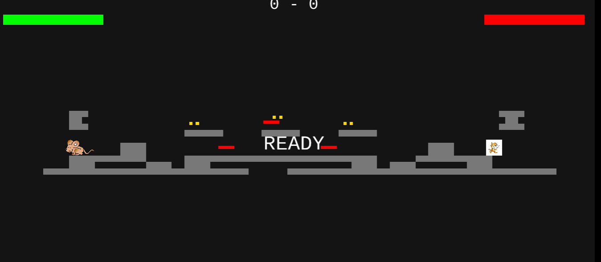

This project was based on my inaginations and experience with watching cartoons growing up as a child. Waking up everyday in the morning just to watch cartoons on my grandmas old television. Getting the nice thrill with all of the different varities of cartoons. My project was created based on wanting others to not forget the ammazing times as a child that we had, to cherish all of these momments as they are being replaced by numerous of things such as comuters, i pads, mobile devices such as phones which prink along social media and yotuube shorts, tiktok reels, instagram reels, and more.
My project was an inspiration from the cartoon Tom and Jerry where there is a cat and mouse sprite chasing one another and you have the option to either choose solo mode or multiplayer where in solo you try and reach a flag as a mouse to escape. In multiplayer two people, the left mouse using WASD to move then and X to shoot. WHile the cat on the right it uses the arrow keys to move and N to shoot, trying to reach the goal of three while also dodging the obstacles. I was trying to make a fun interactive game that would be fun and also remind us of our childhood cartoon Tom and Jerry and just generally cartoons.
Some takeaways that I had for this project is to always be creative. What I mean by this is that I had a orignal idea for my project but after thinking about how boring it would be I ended up editing my game into something that was more creative. I started first with the idea of creating two balls that would fight each other then I started to think of ways to make it better and I ended up adding in sprites that resembled Tom and Jerry.
